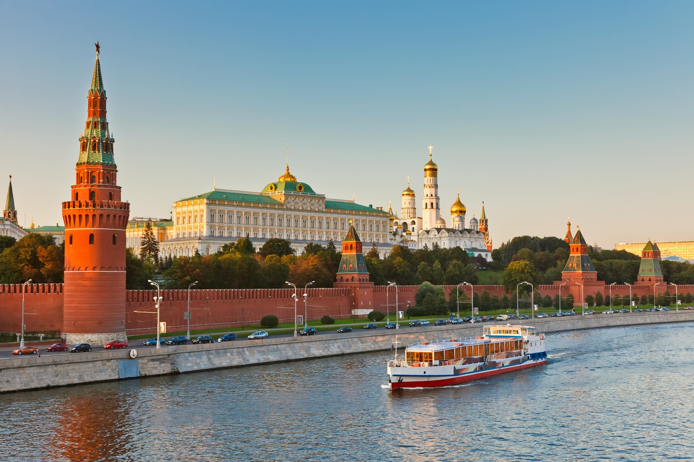

Город Москва (Россия)
Москва - столица России и крупнейший город страны. Это огромный мегаполис, который является историческим, политическим и духовным сердцем Российской Федерации. Москва - крупнейшая столица Европы, наполненная достопримечательностями, памятниками истории и культуры, а также музеями мирового уровня. Это город невероятной динамики и размеров, который невозможно объять за одну поездку.
Москва - очаровательный современный город, имеющий огромное количество достопримечательностей и интересных мест: от древней крепости и грандиозных соборов до красивых парков и футуристических небоскребов. Столица России существует уже около девяти веков. На её улочках можно встретить старинные сакральные памятники и дворцы, которые соседствуют с монументальными зданиями советской архитектуры и ультрасовременными сооружениями. Но не только этим славится Москва. Столица имеет колоссальное количество театров, музеев, галерей, а также великолепных ресторанов, уютных кафе и модных клубов. Поэтому Москва способна надолго занять любого туриста.
Москва разделяется на 12 административных округов. Последние три расположены за пределами МКАД. 1 - Центральный административный округ Москвы (ЦАО). Включает следующие районы: Арбат, Басманный, Замоскворечье, Красносельский, Мещанский, Пресненский, Таганский, Тверской район, Хамовники, Якиманка. 2 - Северный административный округ Москвы (САО). Районы: Аэропорт, Беговой, Бескудниковский район, Войковский район, Восточное Дегунино, Головинский район, Дмитровский район, Западное Дегунино, Коптево, Левобережный, Молжаниновский район, Савёловский район, Сокол, Тимирязевский район, Ховрино, Хорошёвский район. 3 - Северо-Восточный административный округ Москвы(СВАО). Районы: Алексеевский район, Алтуфьевский район, Бабушкинский район, Бибирево, Бутырский район, Лианозово, Лосиноостровский район, Марфино, Марьина Роща, Останкинский район, Отрадное, Ростокино, Свиблово, Северный, Северное Медведково, Южное Медведково, Ярославский район. 4 - Восточный административный округ Москвы (ВАО). Районы: Богородское, Вешняки, Восточный, Восточное Измайлово, Гольяново, Ивановское, Измайлово, Косино-Ухтомский, Метрогородок, Новогиреево, Новокосино, Перово, Преображенское, Северное Измайлово, Соколиная Гора, Сокольники. 5 - Юго-Восточный административный округ Москвы (ЮВАО). Районы: Выхино-Жулебино, Капотня, Кузьминки, Лефортово, Люблино, Марьино, Некрасовка, Нижегородский район, Печатники, Рязанский район, Текстильщики, Южнопортовый район. 6 - Южный административный округ Москвы (ЮАО). Районы: Бирюлёво Восточное, Бирюлёво Западное, Братеево, Даниловский район, Донской район, Зябликово, Москворечье-Сабурово, Нагатино-Садовники, Нагатинский Затон, Нагорный район, Орехово-Борисово Северное, Орехово-Борисово Южное, Царицыно, Чертаново Северное, Чертаново Центральное, Чертаново Южное. 7 - Юго-Западный административный округ Москвы (ЮЗАО). Районы: Академический район, Гагаринский район, Зюзино, Коньково, Котловка, Ломоносовский район, Обручевский район, Северное Бутово, Тёплый Стан, Черёмушки, Южное Бутово, Ясенево. 8 - Западный административный округ Москвы (ЗАО). Районы: Внуково, Дорогомилово, Крылатское, Кунцево, Можайский район, Ново-Переделкино, Очаково-Матвеевское, Проспект Вернадского, Раменки, Солнцево, Тропарёво-Никулино, Филёвский Парк, Фили-Давыдково. 9 - Северо-Западный административный округ Москвы (СЗАО). Районы: Куркино, Митино, Покровское-Стрешнево, Северное Тушино, Строгино, Хорошёво-Мнёвники, Щукино, Южное Тушино. 10 - Зеленоградский административный округ Москвы (ЗелАО). 11 - Троицкий административный округ Москвы. 12 - Новомосковский административный округ Москвы.
История
Точный возраст и дата основания Москвы неизвестны. В конце первого тысячелетия до нашей эры здесь поселились славянские племена вятичей и кривичей. Археологические находки «говорят» о том, что поселение на месте современного города существовало уже в 11 столетии. Первые упоминания о Москве датируются 1147 годом, когда князь Юрий Долгорукий принимал здесь союзников во главе с новгородским князем Святославом Ольговичем. Через десятилетие поселение окружили деревянные укрепления. В 12 веке Москва упоминалась как Кучков. В 13 века во время татаро-монгольского нашествия городок был разграблен и сожжён. В 13 веке Москва стала столицей одноимённого княжества. В этот период город быстро растёт и развивается. В 14 веке к Московскому княжеству были присоединены несколько других княжеств. Происходит возвышение Москвы как центра Руси. В 15 веке в период правления Ивана Калиты в будущей столице появляются первые каменные здания.
Столицей Русского государства Москва стала при Иване III Васильевиче в конце 15 столетия. После смерти Ивана Грозного город был занят сначала войсками Лжедмитрия I, затем осажден войсками Лжедмитрия II и после захвачен поляками. Москва была освобождена в 1612 году ополчением во главе с Мининым и Пожарским. В 17 столетии Москва ещё больше расширяется. Кремль же приобретает современные черты. В 1712 году при Петре I Москва теряет столичный статус. Столицей России становится Санкт-Петербург. При этом Москва остаётся местом коронации российских императоров и одним из важнейших городов российского государства. В 1755 году здесь был основан Московский университет.
Как добраться?
Москву обслуживают целых четыре международных аэропорта: Шереметьево, который расположен в 32 км к северо-западу от центра Москвы в городе Химки. Добраться в город можно на аэроэкспрессе - поезде, который следует до Белорусского вокзала, а также автобусах 851, 949, 817 и 948. Домодедово, расположенный в 45 км к юго-востоку от центра Москвы. Аэроэкспрессы курсируют между аэропортом и Павелецким вокзалом. Круглосуточный автобус 308 доставит до метро. Внуково, который находится в 30 км юго-западнее центра российской столицы. На аэроэкспрессе можно доехать до Киевского вокзала. До станции метро можно добраться на автобусах 911, 611, 32. Жуковский - самый маленький среди аэропортов, обслуживающих Москву. Был открыт в 2016 году.
-

-

-
